白龙桌宠开发报告
让桌面上的白龙，逐步成为能看懂工作进度的小伙伴。
jingh12312-rgb/bailong-desktop-pet ↗
本项目基于原版白龙桌宠改进。角色形象、原有动作和基础互动来自原项目；这里主要记录后续新增的工作状态、数据界面、交互及质量优化。
从“点一下会动”，到“知道你在忙什么”
最初的目标是找一个能陪伴使用 Codex 的白龙桌宠。尝试过不同接入方式后，项目最终以独立桌面程序为基础继续改造，把工作提醒和数据面板放在角色上方。
原版已经有透明角色、十五段动作、点击互动、拖动与落地，以及 Codex 额度查询。后续开发的重点，是让这些能力在日常工作里更好用：少占位置，提醒可靠，信息看得懂，动作不会频繁打断。
| 方面 | 原版基础 | 目前的增强 |
|---|---|---|
| 角色互动 | 原有动作、点击、拖动与落地 | 静音自动动作、状态联动、移动控制、动作质量修复 |
| Codex 联动 | 已有额度查询 | 自动识别、多会话状态、会话跳转、压缩上下文识别、完成提醒 |
| 工作信息 | 基础显示 | 胶囊与卡片、周期额度、重置公告、Token 图表与日报 |
| 使用与部署 | 基础启动和菜单 | 集成设置与聊天、连接诊断、开机自启、一键部署、回退和包体优化 |
提醒更清楚，操作更集中，看视频时能暂时让开
小胶囊采用开口弧额度环，任务图标会连贯切换到完成、等待和暂停状态；刷新与小时曲线也有了更明确的入口。视频全屏让位现补上 Firefox 的真实视频节点识别，并明确完成提醒优先：有待确认的完成消息时重新置顶，确认后继续让位。
| 改动 | 现在怎么用 | 解决什么问题 |
|---|---|---|
| 额度小圆环 | 采用单条开口弧，中间只显示数字与百分号 | 减少装饰层次，让小尺寸下的剩余比例更清楚 |
| 状态图标 | 三圆旋转，随后连贯变成感叹号、对勾、三点或暂停符号 | 状态变化更容易辨认，提醒保持到你确认 |
| 小时曲线入口 | 统一从底部今日 Token 进入，右侧只保留三个柱状图范围 | 去掉重复的 24h 按钮；选中后有高亮，重复点击不重播动画 |
| 视频全屏让位 | 视频全屏时临时退出置顶；未读完成提醒优先 | 完成提醒重新置顶到确认，再继续让位；手动关闭置顶不会被自动重开 |
| 统一刷新 | 正常与详情共用一个入口；日报有自己的统计刷新 | 不用在多个数据卡片中寻找刷新按钮 |
| 顶栏减负 | 四个纯图标按钮；运行时保留 Codex 与数量，等待和待查看使用短标题 | 留出文字空间，避免标题挤到右边或被截断 |
期间试过分段圆环，最终采用开口弧。这里只把当前方案作为使用说明，历史试验不当作仍可选择的功能。
需要时展开，忙别的时缩成胶囊
正常面板展示正在做什么、剩余额度与用量；胶囊只保留简短状态和必要入口。点击胶囊会先回到正常卡片，更多信息再进入详情，避免一步跳到大窗口。
“自动收起”和“手动保持小尺寸”有区别：自动收起后，新任务可以让面板恢复；手动选定小尺寸后，则继续保持，尊重使用者的选择。
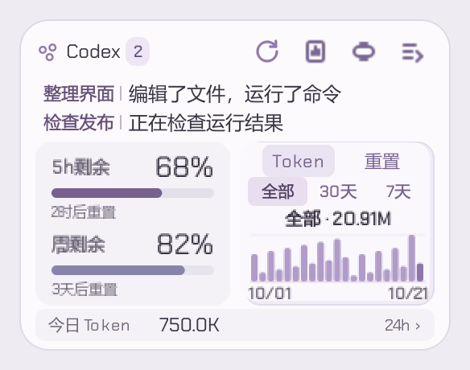
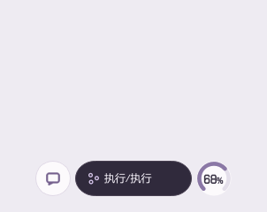
状态图标本身，也能把事情讲清楚
执行任务时，三个空心圆绕中心旋转，同时轻轻展开、收拢。完成后，它们减速并聚成感叹号，晃几下就停下来，继续保留待查看提醒。你确认后，图标变成对勾；如果还有任务，随后恢复旋转。
Codex 明确标记正在等待输入或审批时，图标变成呼吸的三个点；任务中断时变成暂停符号，继续执行后恢复。等待状态来自实际标记，不靠聊天文字或等待时长猜测。当前循环比上一版快约 20%，完成提醒的停留规则保留。
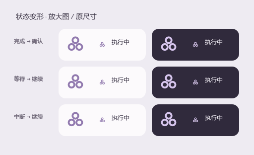
两个会话分别更新，完成提醒等你确认
面板最多同时展示两个会话，更多会话通过“+N”切换。每行使用会话名称，点击可以跳到对应的 Codex 对话；只有变化的那一行滚动，另一行不跟着重播。
任务完成后，图标先短暂晃动，再保留感叹号。点击确认、在对应会话回复，或满足可靠的已读判定后，才清除相应提醒。单纯点击跳转不会立刻当作已读；已经确认的子会话也不会反复冒出来。
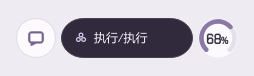
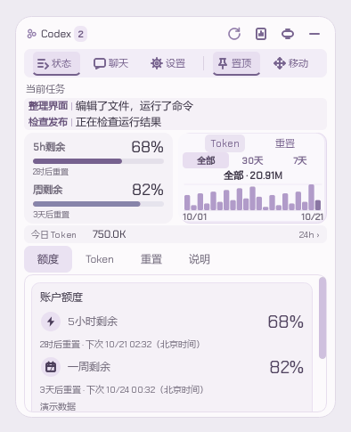
剩余额度是一件事，消耗了多少是另一件事
正常卡片使用带标签的额度条，直接写出“5h 剩余”“周剩余”和各自的重置时间。周额度条随剩余量由蓝灰、淡紫逐渐转向暖金和玫瑰色；缺少有效数据时显示未知，不当作零。
胶囊旁的数字环现在采用单条 270° 开口弧和圆润端点，中央只放百分比数字，未知时显示“—”。它优先展示可用的五小时额度，耗尽后改看周额度；到重置时重新查询。今日 Token 单独显示，用来理解工作量，不混算成套餐百分比。
右侧的 Token 卡片只保留全部、30 天、7 天；今日 24 小时曲线统一从底部“今日 Token · 24h”进入。当前小时视图会高亮底部入口，避免重复按钮，也方便看出正在查看哪个范围。额外重置来自第三方公告：有待落实消息时优先展示，落实后恢复常态；公告不等于个人账户已经到账。
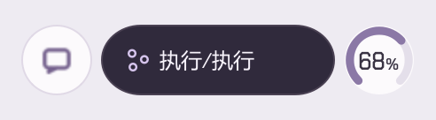
日报平时隐藏，按一下再看
日报在主面板上方打开并对齐宽度。概览把累计信息与昨日信息分开：会话数、活跃天数、总用量和最常用模型看累计；消息数、高峰时段与 24 小时曲线看昨日。
概览完整展开，不需要滚动；模型页沿用同一窗口高度，模型多时才出现滚动条。模型页保留全部、30 天、7 天筛选，点击某个模型就只看它的用量。
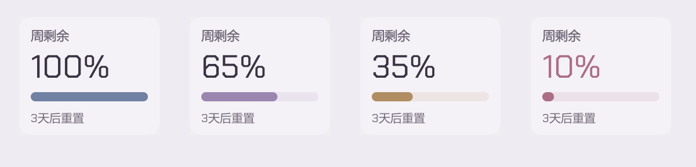
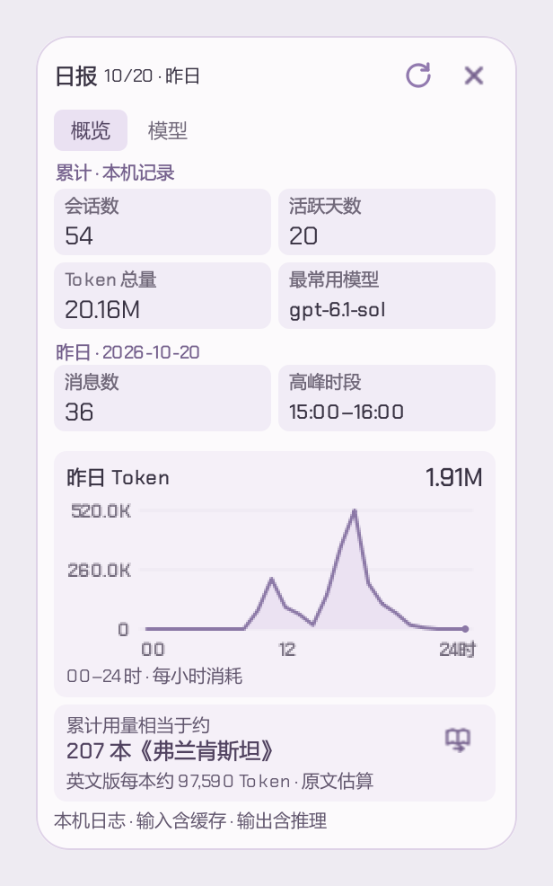
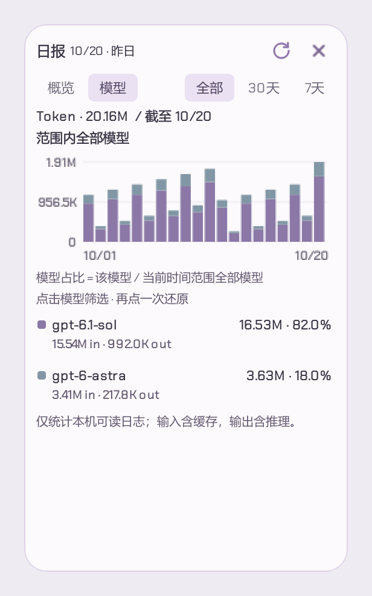
底部的书本换算看的是累计 Token 总量，与概览里的“Token 总量”对应；上方曲线看的是昨日 Token。书本提示使用 27 本书各自的参考 Token 数计算，打开时随机选书，也可以点击图形按钮换一本。它是一种帮助理解数量级的等量比喻，不代表真的阅读了这些书。
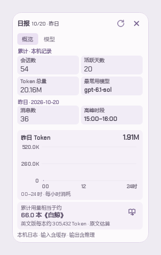
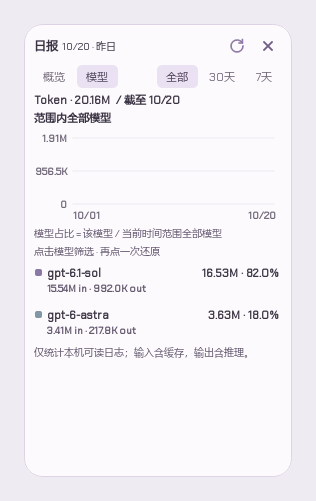
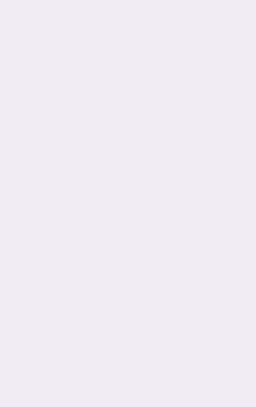
设置负责长期偏好，面板负责眼前操作
刷新、日报、缩小和详情留在面板上，统一改成 28×28 像素的纯图标按钮，点击和悬停有反馈。正常面板高度从 196 缩到 188 像素，保留原有信息。标题不再重复“进行中”：执行时显示 Codex，多会话加数量；需要操作或查看时，显示“待你输入”“待你确认”“N条待查看”等短状态，并按实际空间安排宽度。设置与聊天集成到同一大卡片中，关闭后回到之前的状态界面；右键保留常用桌面操作和恢复入口。大卡片导航已删掉容易被误认成按钮的“桌面”分组文字，置顶和移动开关继续保留。
一个界面一个刷新入口，失败时保住已有数据
正常面板和详情使用同一轮刷新，同时读取账户额度、Token 统计和额外重置公告；日报只更新自己的统计，概览和模型页共享结果。任务状态仍由实时联动更新。
单弧箭头只在按钮范围内旋转、轻微呼吸，成功后短暂变成对勾；部分失败用不同反馈提示。它会等待这一轮查询真正结束，重复点击合并为同一轮。失败时保留上次额度、今日数字和 24 小时曲线；刷新不会让整张卡片重新播放入场动画。
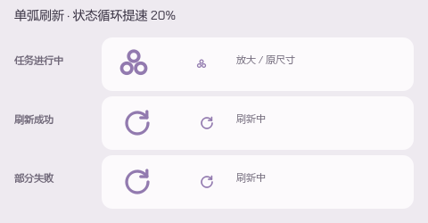
设置支持开机自启、置顶、移动、随机动作、声音和连接诊断。编辑中的设置会保留草稿，外部变化不会悄悄覆盖尚未保存的修改。
闲聊是单独配置的模型服务，支持流式回复和会话管理；它与 Codex 的任务对话分开。自动动作保持安静，声音留给主动点击，减少工作时的打扰。
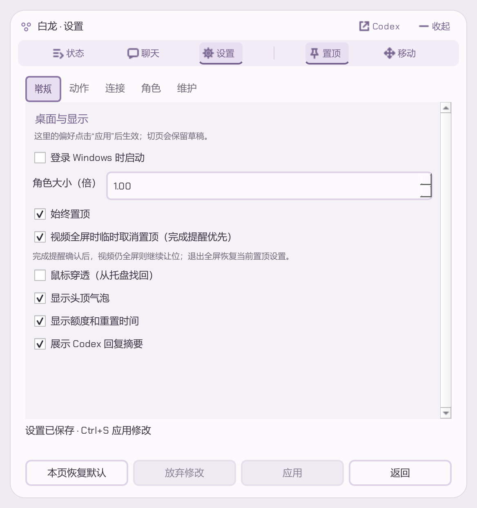
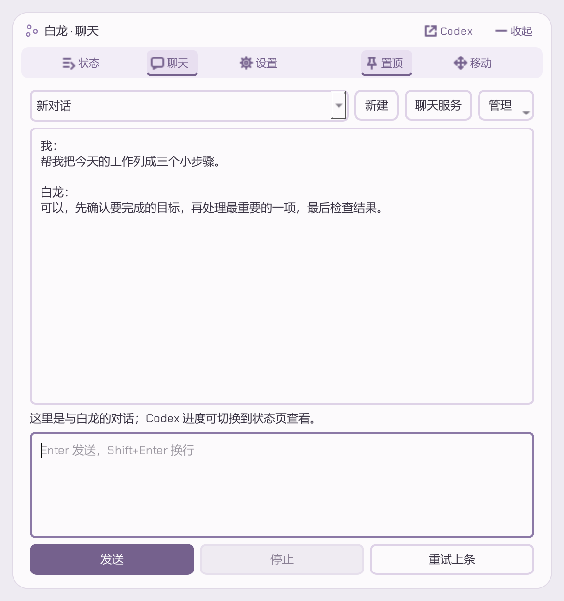
看全屏视频时，人物和气泡一起暂时让开
在“设置 → 常规”中，同时开启始终置顶和视频全屏时临时取消置顶。自动让位开关默认开启。没有待确认的完成提醒时，识别到前台全屏视频，而且人物或气泡与视频所在屏幕重叠后，所属窗口会一起退到视频后面；退出全屏或切换应用后，再恢复当前的置顶选择。
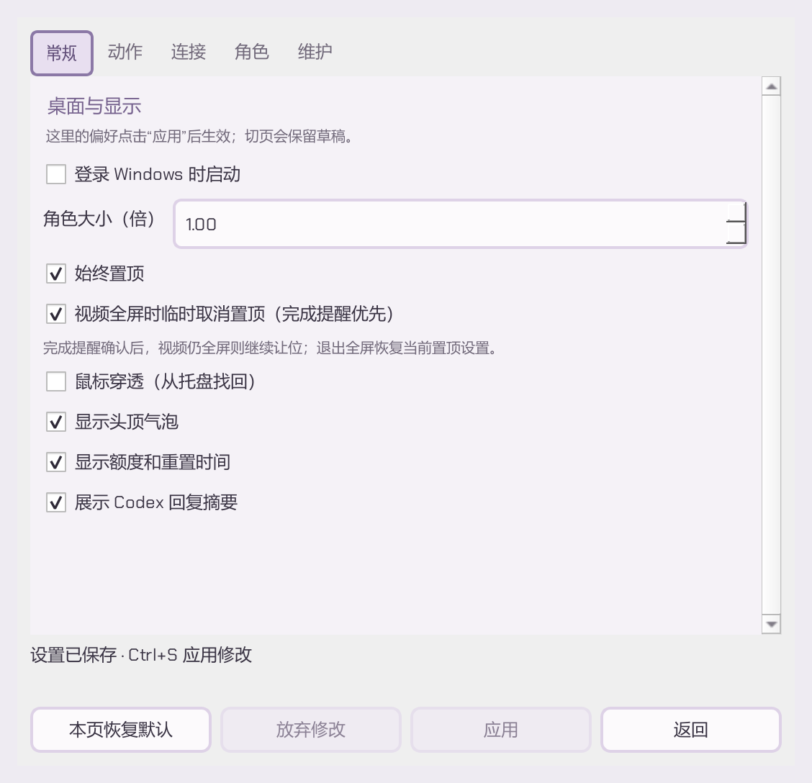
| 遇到的情况 | 桌宠怎么处理 |
|---|---|
| 视频全屏时收到完成提醒 | 人物和气泡重新置顶，保持到点击状态图标确认，或 Codex 已读识别清除该提醒；全部未读提醒清除后，视频仍全屏则继续让位 |
| 识别到前台全屏视频，且没有未读完成提醒 | 临时取消人物和气泡的置顶，不修改大小、位置或可见性 |
| 退出全屏或切换应用 | 恢复当前的置顶偏好；手动关掉置顶后不会被自动重开 |
| 普通最大化、非视频网页 F11、后台音乐 | 不把这些情况当作全屏视频 |
| 视频在另一块屏幕，桌宠窗口没有与其重叠 | 继续保持原来的显示方式 |
| 其他浏览器没有提供视频或播放控件信息 | 可能无法自动识别，保持原设置 |
Firefox 的 B 站自定义控件曾被旧方案漏检；v0.6.50 改用真实 video 节点、可见状态和屏幕位置，不再依赖控制栏按钮。此轮验收跟踪用户实际 Firefox 全屏播放、已安装桌宠进程和原生置顶位，并核对退出后的恢复。完成提醒优先使用实际状态控件与原生窗口验证。其他浏览器沿用原有控件识别，未逐网站、逐播放器验证。识别在后台进行，层级变化不重建整张气泡。
修的不只是“动起来”，还有衔接和稳定
先弄清楚原有动作，再修质量
对照原片与当前播放素材，检查透明边缘、动作尺寸、锚点、节奏和待机衔接。清理边缘噪点，减少动作结束时突然缩小，以及待机和动作间清晰度不一致的问题。
让一个动作播完，再接下一条状态
Codex 状态更新很频繁，角色不会每收到一条就打断当前动作。状态先合并，再按间隔选择适合的已有动作，避免看起来像不停被重置。
先准备下一页，再开始翻页
窗口切换会先准备好文字、图表和完整画面，播放时主要移动或裁切已经准备好的图像。收回时保留数值；原生窗口缩小时短暂保留末帧，减少空白与闪烁。
把“每一帧都重做”改成“变化才更新”
标题、坐标轴和标签缓存复用，动画主要更新进度或显现范围。日志扫描放到后台，只处理新增部分；隐藏的界面停止无用动画。 状态与刷新图标在窗口截图交接时会暂停运动时钟，落地后接着原姿态播放；日报新增模型行后先完成排版，减少滚动条稍后出现时的卡顿。
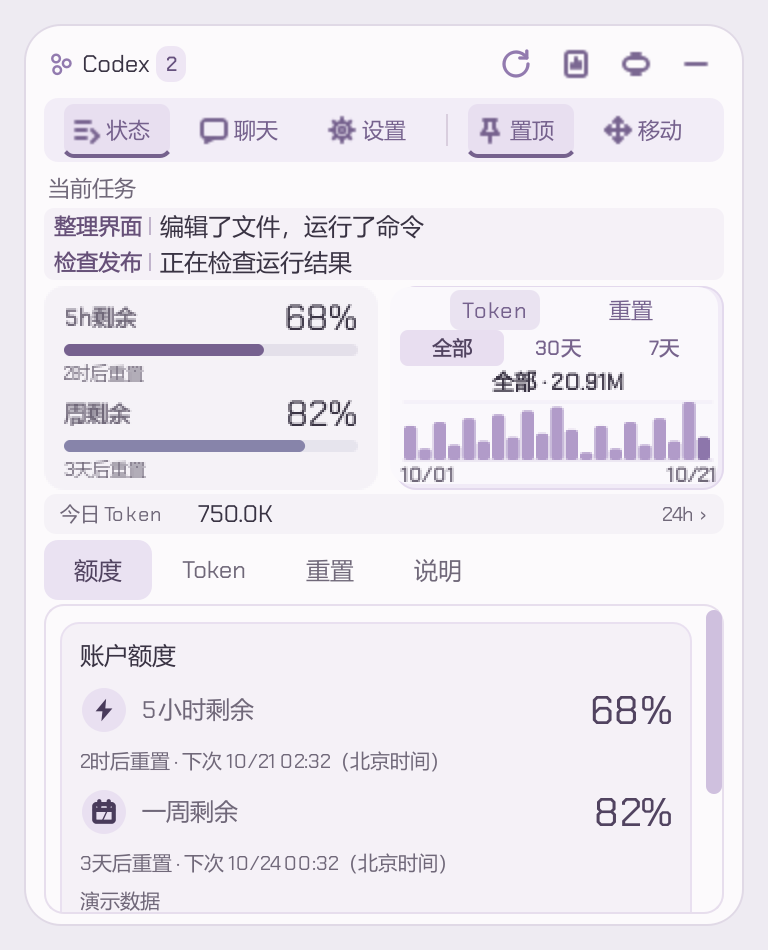
安装包也做了减重，但素材仍占大头
包体专项优化把安装程序从约 777 MB 降到约 675 MB。主要做了无损素材压缩、依赖裁剪、轻量维护程序，以及不同安装版本之间的相同素材共享。保留画质后，角色动画依然是主要体积来源。
以上体积为 v0.6.33 → v0.6.34 的专项记录，采用十进制 MB；不是把全部历史成果当成本次重新测量。后续小改覆盖上一版登记发布包，保留用户数据和安装回退，不再输出分卷。
v0.6.50 视频让位及现有交互检查通过
另核对 58 个编译模块与源码一致
v0.6.50 已核对 100%、125%、150%、200%
设置开关显示与应用均通过
一键部署验证启动结果，保留设置、聊天和必要回退
动效检查包含中间帧、布局及原生交接；离屏渲染、CPU 耗时与定时器采样不能当作显示器真实帧率，也不代表所有机器都已验证。
按模型区分的项目 Token 用量
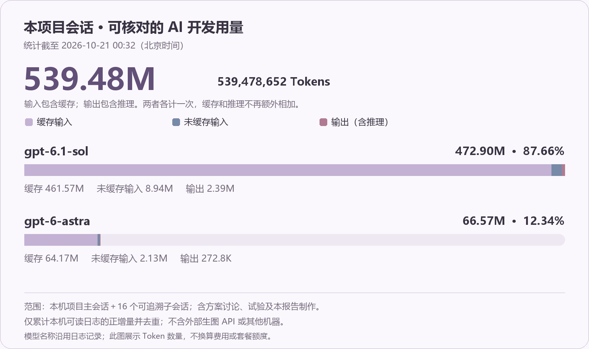
已经能日常使用，还留着几件值得继续做的事
新的自然行走与飞行动画尚未正式完成。之前的生成预览属于试验，用户后来选择先修原动作。现阶段能够在桌面移动，并不等于已经装入完整、自然的左右交替行走动画；后续新动作仍要对齐原角色比例、图层和动作风格。
数据的范围需要继续保持清楚。本机日志统计不到其他机器的全部消耗；额度需要本机的 Codex 登录状态；第三方公告依赖网站；闲聊需要自己的模型服务。不可用时应说明原因，不能用演示值冒充真实信息。
下一步更值得做真实使用回归。在不同电脑、缩放、屏幕位置与长时间运行中检查切换、提醒和资源占用，再根据实际问题继续优化。界面看起来顺滑只是起点，长期用起来可靠才是目标。
界面配图和动效由当前 Qt 控件渲染，使用隔离的演示数据，不包含真实聊天、账号或密钥。角色图与招手动作来自当前原项目素材。第 06 节用量图单独读取本机项目会话计数。GIF 便于文档展示，不作为画质或帧率的最终验收依据。